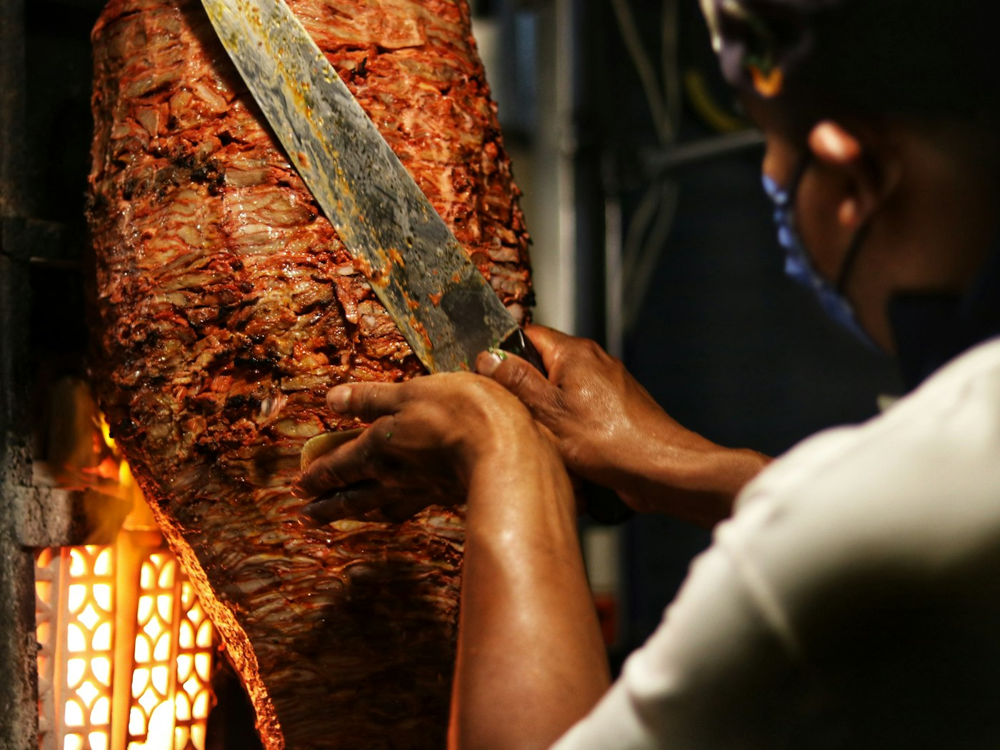
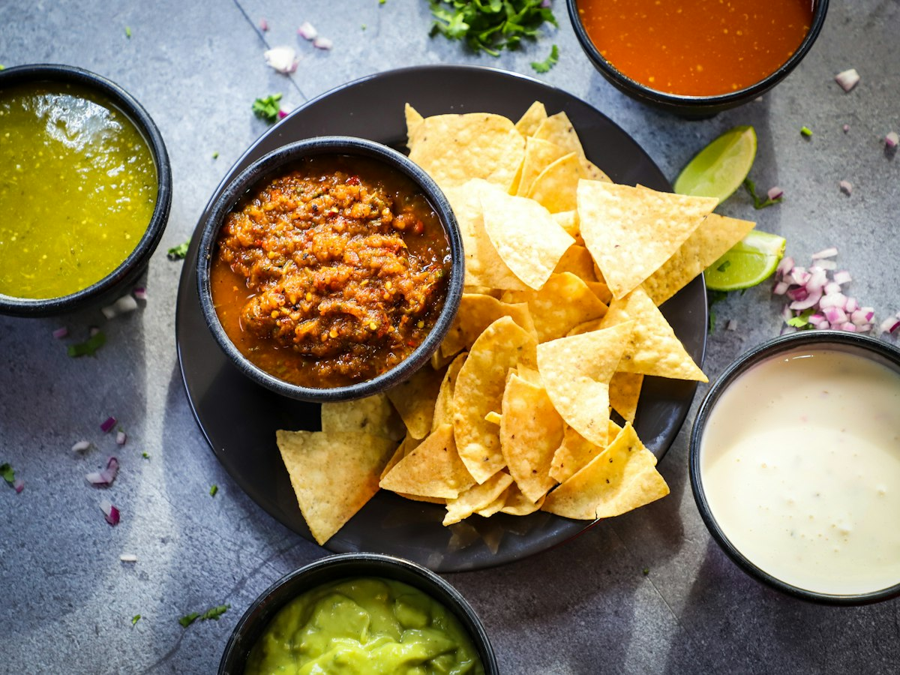

Cozinha mexicana de verdade, feita na hora.
Tacos, burritos e quesadillas preparados no momento do pedido, com ingredientes frescos e receitas tradicionais. Na sua casa em cerca de 40 minutos.
- 16 pratos no cardápio
- ~40 min de entrega
- Frete grátis acima de R$ 80
Do que você tem fome hoje?
Os favoritos da casa


Al pastor no trompocomo nas taquerias da Cidade do México
Comida mexicana de verdade, sem atalhos
Cada detalhe é pensado para que a experiência em casa seja tão boa quanto sentar no balcão de uma taqueria.
-
Ingredientes frescos
Guacamole e pico de gallo preparados diariamente, nunca industrializados.
-
Receitas autênticas
Molhos e marinadas inspirados nas taquerias da Cidade do México.
-
Chega quentinho
Embalagens térmicas que preservam a temperatura e a crocância.
-
Do seu jeito
Escolha o nível de picância e deixe observações em cada pedido.
Do cardápio à sua mesa
Você escolhe, a gente prepara na hora e entrega quentinho.
-
Escolha
Navegue pelo cardápio, filtre por categoria ou preço e monte seu pedido.
-
Peça
Informe o endereço, escolha a forma de pagamento e confirme em poucos cliques.
-
Acompanhe
Veja em "Meus Pedidos" quando seu pedido entra em preparação e sai para entrega.
-
Receba
Embalagem térmica, entrega rápida e pagamento na hora de receber.
25% de desconto na sua mesa
Em homenagem à Andreia, a primeira cozinheira da nossa equipe: use o cupom ANDREIA no carrinho e ganhe 25% em qualquer pedido.